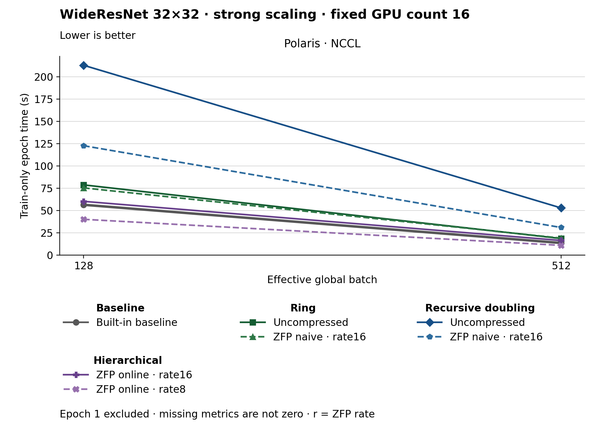

The figure uses lines. Methods use colors, line styles and markers. The metric is Train-only epoch time (s). Polaris · NCCL, Effective global batch 128: Hierarchical · ZFP online · rate8 has the lowest plotted value, 40.080. Polaris · NCCL, Effective global batch 512: Hierarchical · ZFP online · rate8 has the lowest plotted value, 10.870. Epoch 1 is excluded. Values are medians; when repeated runs are available the selected repeat policy is median. These are not confidence intervals across repeated jobs. Missing or unrecorded metrics are omitted, not set to zero.
| Panel | Effective global batch | Method | Value | Runs |
|---|---|---|---|---|
| Polaris · NCCL | 128 | none | 56.37 | 1 |
| Polaris · NCCL | 128 | ring | 78.67 | 1 |
| Polaris · NCCL | 128 | ring_zfp_naive:16 | 75.32 | 1 |
| Polaris · NCCL | 128 | hierarchical_zfp_online_coll:16 | 60.21 | 2 |
| Polaris · NCCL | 128 | hierarchical_zfp_online_coll:8 | 40.08 | 2 |
| Polaris · NCCL | 128 | recursive_doubling | 212.79 | 1 |
| Polaris · NCCL | 128 | recursive_doubling_zfp_naive:16 | 122.6 | 1 |
| Polaris · NCCL | 512 | none | 13.53 | 1 |
| Polaris · NCCL | 512 | ring | 18.51 | 1 |
| Polaris · NCCL | 512 | ring_zfp_naive:16 | 18.97 | 1 |
| Polaris · NCCL | 512 | hierarchical_zfp_online_coll:16 | 16.325000000000003 | 2 |
| Polaris · NCCL | 512 | hierarchical_zfp_online_coll:8 | 10.870000000000001 | 2 |
| Polaris · NCCL | 512 | recursive_doubling | 52.79 | 1 |
| Polaris · NCCL | 512 | recursive_doubling_zfp_naive:16 | 30.87 | 1 |